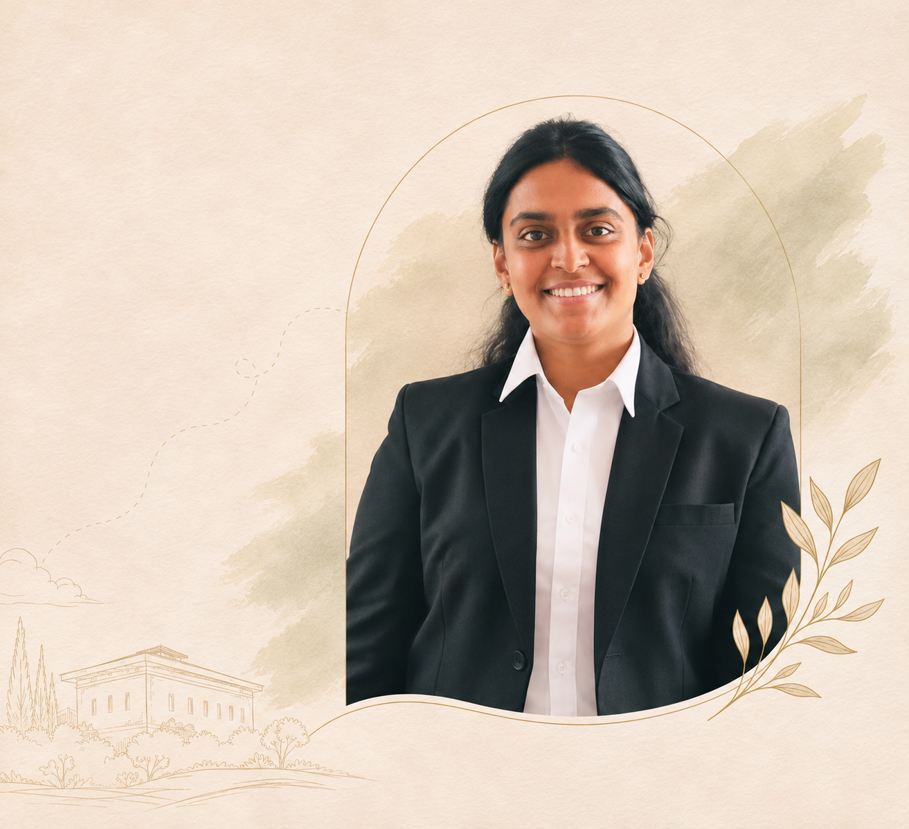
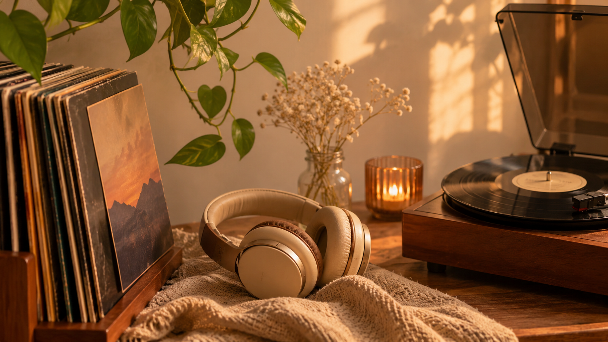
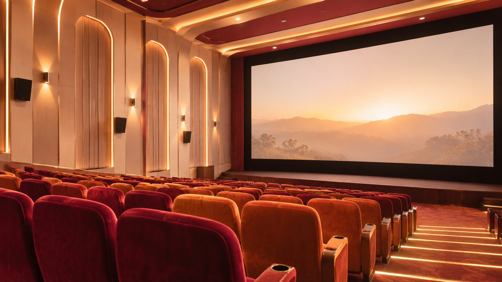

B.E. Electrical and Electronics Engineering
Sri Krishna College of Technology
Built a foundation in electrical and electronics engineering while exploring software, programming and technology beyond the classroom.
ENGINEERING · TECHNOLOGY · LIFE
A little bit of logic, a lot of curiosity.
An engineer by education, a technology enthusiast by profession, and an explorer at heart.
Based in Chennai, India · Always curious about what’s next

01 / THE PROFESSIONAL SIDE
Every experience has added a new layer — from engineering fundamentals to building with technology.
Sri Krishna College of Technology
Built a foundation in electrical and electronics engineering while exploring software, programming and technology beyond the classroom.
Titan Engineering & Automation Limited
Gained hands-on exposure to the design, assembly and wiring of industrial control panels, and learned about their circuitry and operating mechanisms.
Cognizant · Coimbatore
Completed Java Full Stack training covering Java, Spring Boot, ReactJS and REST API development, and worked on a Hospital Management System project involving full-stack application development.
Psiog Digital · Chennai
Currently in training for software engineering, focusing on programming, SQL, database management and software development practices.
02 / THINGS I'VE BUILT
From web pages to connected hardware, each project added something new to how I build and think.
Clinic Management System
A full-stack clinic management system built as a team. I worked on the ReactJS frontend and the backend for the Pharmacy and Inventory module, using Spring Boot controller, service and repository layers.
LoRa and IoT based
A tunnel safety system on ESP32 and LoRa that tracks temperature, humidity, gases, fire and vibration, sends data over long range to a live ThingSpeak dashboard, and triggers a fan, solenoid and SOS alerts automatically.
ReactJS application
A simple, friendly countdown timer with timer management and alerts, along with a Desklog timer for tracking productivity.
Jewellery and scrunchie store
A jewellery and scrunchie website built with HTML and CSS, with a stylish, user-friendly layout focused on visual appeal and easy navigation.
03 / OFF THE CLOCK
The sounds I return to, the stories that keep me hooked and the flavours I love discovering.

From Anirudh and Hiphop Tamizha to Harris Jayaraj, Taylor Swift and Dua Lipa, my playlists move across languages, moods and genres.

Thriller, horror, sci-fi and adventure. The more gripping the story, the better.
From a biryani favourite to discovering flavours from different parts of the world.
04 / MY CONSTANTS
A little bit of chill, a little bit of chaos, and a whole lot of love. Home is where all of it comes together.
Rooted in Hosur, wherever life takes us.
05 / LIFE IN FRAMES
A life outside the calendar: places to discover, people to make memories with, and a microphone whenever there’s a story to host.
A LITTLE MORE ABOUT ME
Hosting and compering bring out a different side of me — the energy of a live room, the spontaneity of the moment and the joy of bringing people together.